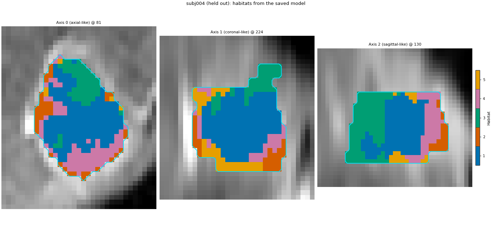

Note
Go to the end to download the full example code.
Train, save, and predict new patients
Background. A habitat study usually has a training set, where the
habitat definition is learned, and new patients, where that definition
is only applied. The new patients must never influence the definition:
no refitted centroids, no refitted bin edges. The .habitatmodel
file is what carries the definition from one side to the other, so a
later cohort (or a colleague) gets habitat ids that mean the same thing
as in the training set.
Purpose. You will fit the analysis of Two-step habitats with a Spec on three training patients, save it, look at what the file contains, reload it into a fresh object, label two held-out patients without refitting anything, check that the model was not changed by labelling, repeat the labelling in a separate Python process to show that the file alone is enough, and export the held-out feature table as a CSV.
When to use. Any study with a train / held-out split, a cohort that grows after the model was fixed, or a colleague who should label their own patients with your habitat definition.
Key terms. Full definitions are on Concepts.
held-out patient – a patient that is labelled with the saved model but was not used to fit it.
fit vs. predict –
fit_predictlearns the definition and labels the training patients;predictonly labels patients with an existing definition.subject-level normalization – winsorize and min-max with the patient’s own statistics. It is recomputed for every patient, training or held-out, and stores no state.
cohort-level preprocessing – the 10-bin discretization learned on the pooled training supervoxels. Its bin edges are stored in the model and reused unchanged on held-out patients.
.habitatmodel – the saved habitat definition: centroids, the cohort-level state, the spec, and a non-identifying description of the training cohort.
The page uses the approved analysis definition unchanged; only the training set differs from the reference page (three patients instead of two).
Note
This is not external validation. The held-out patients (subj004, subj005) come from the same 5-subject demo cohort as the training patients, not from another centre or scanner, and three training patients are a demo, not a cohort. The page demonstrates the mechanics of a train / held-out split; nothing on it is evidence of generalization.
Change DATA / MODALITIES / ROI to your preprocessed tree.
Load the cohort and split it
The first three demo patients are the training set; the last two are held out and only ever labelled with the saved model. sphinx_gallery_thumbnail_number = 2
import subprocess
import sys
import zipfile
from pathlib import Path
import matplotlib.pyplot as plt
import numpy as np
from habit.contracts import HabitatModel, cohort_from_directory
from habit.datasets import fetch_demo
from habit.execution import backend_from_policy
from habit.recipes import Study
from habit.spec import HabitatSpec, Spec, Stage
from habit.spec.policy import RunPolicy
from habit.viz import plot_habitat_overlay
# Change DATA / MODALITIES / ROI to your preprocessed layout.
DATA = fetch_demo()
MODALITIES = ("pre_contrast", "LAP", "PVP", "delay_3min")
ROI = "LAP"
cohort = cohort_from_directory(DATA, modalities=MODALITIES, roi=ROI)
train, held_out = cohort[:3], cohort[3:5]
print("train: ", list(train.subject_ids))
print("held out:", list(held_out.subject_ids))
Path("out").mkdir(exist_ok=True)
HABIT demo data (cached)
DATA (preprocessed root): C:\Users\dongm\.habit_data\demo-data-v1\preprocessed
On-disk inventory of this folder:
subjects (5): subj001, subj002, subj003, subj004, subj005
image series: LAP, PVP, delay_3min, pre_contrast
mask keys: LAP, PVP, delay_3min, pre_contrast
example image: images/subj001/delay_3min/WATER__BH_Ax_LAVA_Flex_3min_Series0012.nrrd
example mask: masks/subj001/delay_3min/WATER__BH_Ax_LAVA_Flex_10min_Series0017_mask.nrrd
Your own data must use the same folder tree (change IDs / series names):
DATA/
images/<subject_id>/<modality>/<one image file>
masks/<subject_id>/<roi>/<one mask file>
Then load it with the same call the demos use:
cohort = cohort_from_directory(DATA, modalities=("LAP",), roi="LAP")
Swap DATA / modalities / roi to match your tree. Mask key is often the
same as one image series (here LAP).
train: ['subj001', 'subj002', 'subj003']
held out: ['subj004', 'subj005']
Fit on the training patients
The same stage list as the reference page. Stages before pool are
subject-level; preprocess_cohort after pool is cohort-level and
is stored in the model.
spec = HabitatSpec(
name="train_save_predict_two_step",
stages=(
# extract: one intensity column per DCE phase, voxels inside the ROI.
Stage("extract", Spec("raw", {"modalities": list(MODALITIES), "roi": ROI})),
# subject-level: clip to each patient's own 1st..99th percentile.
Stage("preprocess", Spec("winsorize", {"winsor_limits": [0.01, 0.01]})),
# subject-level: rescale each column to 0..1 with the patient's own
# min and max.
Stage("preprocess2", Spec("zscore")),
# partition: 30 supervoxels per tumour.
Stage("partition", Spec("kmeans", {"n_supervoxels": 30})),
# pool: stack the training supervoxels into one matrix.
Stage("pool", Spec("pool")),
# cohort-level: 10 equal-width bins with edges learned on the pooled
# training supervoxels only.
# fit: one k-means for the cohort, 2..10 habitats, elbow rule.
Stage(
"fit",
Spec(
"kmeans",
{"min_habitats": 2, "max_habitats": 10, "validation": "elbow", "n_init": 10},
),
),
# assign: nearest centroid for every supervoxel, then its voxels.
Stage("assign", Spec("nearest_centroid")),
# quantify: one row per subject.
Stage("volume", Spec("volume")),
Stage("msi", Spec("msi")),
Stage("ith", Spec("ith_score")),
Stage("graph", Spec("graph", {"include_extended_metrics": False})),
),
random_seed=0,
)
result = Study(spec).fit_predict(
train,
backend=backend_from_policy(
RunPolicy(backend="serial", on_subject_failure="continue")
),
)
print(result.habitat_model.summary())
# One training map, to compare colours with the held-out patients below.
fig = plot_habitat_overlay(
train[0].image("LAP"),
result.habitat_maps[0],
title=f"{train[0].subject_id} (training): habitats",
crop_to="labels",
)
fig.savefig("out/train_save_predict_train.png", dpi=150, bbox_inches="tight")
plt.show()

Cohort.map[_ComputeUnits]: 0%| | 0/3 [00:00<?, ?it/s]
Cohort.map[_ComputeUnits]: 33%|███▎ | 1/3 [00:04<00:08, 4.12s/it]
Cohort.map[_ComputeUnits]: 67%|██████▋ | 2/3 [00:05<00:02, 2.97s/it]
Cohort.map[_ComputeUnits]: 100%|██████████| 3/3 [00:07<00:00, 2.47s/it]
Cohort.map[_ComputeUnits]: 100%|██████████| 3/3 [00:07<00:00, 2.47s/it]
Cohort.map[_AssignPrecomputedUnits]: 0%| | 0/3 [00:00<?, ?it/s]
Cohort.map[_AssignPrecomputedUnits]: 33%|███▎ | 1/3 [00:01<00:02, 1.18s/it]
Cohort.map[_AssignPrecomputedUnits]: 67%|██████▋ | 2/3 [00:02<00:01, 1.04s/it]
Cohort.map[_AssignPrecomputedUnits]: 100%|██████████| 3/3 [00:02<00:00, 1.04it/s]
Cohort.map[_AssignPrecomputedUnits]: 100%|██████████| 3/3 [00:02<00:00, 1.04it/s]
HabitatModel kmeans-67aab5a9d307d671
habitats : 5
features (4) : pre_contrast, LAP, PVP, delay_3min
defining cohort : n=3
modalities : pre_contrast, LAP, PVP, delay_3min
cohort digest : 7ffce8f589e3ad28...
produced by : habitat_model_fitter.kmeans
habit version : 3.0.0
random seed : 0
preprocessing state: inertia, selection_report, validation
F:\work\habit_project\habit\viz\habitat_overlay.py:806: UserWarning: Display geometry conflict: image/anatomy direction does not match mask/label direction. Using the mask/label direction so coronal/sagittal superior-up follows the labelled anatomy. Pass direction= to override.
resolved_direction, resolved_spacing = resolve_display_geometry(
The methods paragraph of the training run
The run manifest records every executed step, its parameters, the
seeds and the software versions. describe_methods() turns that
record into a draft methods paragraph. It states only steps that
actually ran; you still edit it for your manuscript.
print(result.manifest.describe_methods())
Habitat imaging analysis was performed with HABIT (version 3.0.0). The analysis specification 'train_save_predict_two_step' comprised the following ordered stages: extract (raw: modalities=['pre_contrast', 'LAP', 'PVP', 'delay_3min'], roi='LAP'); preprocess (winsorize: winsor_limits=[0.01, 0.01]); preprocess2 (zscore); partition (kmeans: n_supervoxels=30); pool (pool); fit (kmeans: max_habitats=10, min_habitats=2, n_init=10, validation='elbow'); assign (nearest_centroid); volume (volume); msi (msi); ith (ith_score); graph (graph: include_extended_metrics=False). The executed pipeline steps, in pipeline order, were: subject_images; voxel_feature_extractor.raw; feature_preprocessing.subject.voxel; supervoxelizer.kmeans; habitat_assigner.nearest_centroid; recipes.habitat.two_step. Random seed 0 was fixed for the seeded steps (habitat_assigner.nearest_centroid, recipes.habitat.two_step). 3 subject(s) entered the analysis and 3 were processed successfully.
Save the model and look inside the file
result.save writes the model plus the training tables;
write_maps=True also writes the training habitat maps as NRRD.
The .habitatmodel file is a plain ZIP archive: a JSON manifest
(every scalar field, the spec, the cohort-level state and a format
version) and the centroid matrix as .npy. No pickle, so any
Python – or any language with ZIP and JSON – can read it, and a
future HABIT can refuse an incompatible file with a clear message.
result.save("out/train_save_predict", write_maps=True)
model_path = Path("out/train_save_predict/habitat_model.habitatmodel").resolve()
with zipfile.ZipFile(model_path) as archive:
print("archive members:", archive.namelist())
print("file size (kB):", round(model_path.stat().st_size / 1024, 1))
archive members: ['manifest.json', 'arrays/centroids.npy']
file size (kB): 2.6
Reload into a fresh object
HabitatModel.load builds a new object from the file alone. The
model carries an id and a non-identifying description of the cohort
that defined it (number of subjects, modalities, a digest of the
subject ids), so a shared file says where its definition came from.
model = HabitatModel.load(model_path)
print("model id: ", model.model_id)
print("habitats: ", model.n_habitats)
print("feature columns: ", model.feature_names)
print("centroid matrix shape: ", model.centroids.shape)
print("training subjects: ", model.cohort_fingerprint.n_subjects)
print("training modalities: ", model.cohort_fingerprint.modalities)
print("cohort-level state keys:", sorted(model.preprocessing_state))
# The reloaded model is the same definition as the in-memory one.
print("same centroids as before saving:", np.array_equal(model.centroids, result.habitat_model.centroids))
print("same model id as before saving: ", model.model_id == result.habitat_model.model_id)
model id: kmeans-67aab5a9d307d671
habitats: 5
feature columns: ('pre_contrast', 'LAP', 'PVP', 'delay_3min')
centroid matrix shape: (5, 4)
training subjects: 3
training modalities: ('pre_contrast', 'LAP', 'PVP', 'delay_3min')
cohort-level state keys: ['inertia', 'selection_report', 'validation']
same centroids as before saving: True
same model id as before saving: True
Label the held-out patients
predict never refits. Each held-out patient is winsorized and
min-max scaled with its OWN statistics (subject-level), split into its
own supervoxels, binned with the TRAINING bin edges from the model
(cohort-level), and given the training centroids.
spec=spec states the analysis the new patients go through; its
upstream stages (extract, preprocess, partition) must be the ones the
model was trained with. Without spec=, the spec stored in the
model is used.
centroids_before = model.centroids.copy()
prediction = Study.from_model(model, spec=spec).predict(held_out)
features = prediction.features.frame.set_index("subject")
fraction_columns = [c for c in features.columns if c.endswith("_volume_fraction")]
print("held-out habitat volume fractions:")
print(features[fraction_columns].round(3).to_string())
one = held_out[0]
fig = plot_habitat_overlay(
one.image("LAP"),
prediction.habitat_maps[0],
title=f"{one.subject_id} (held out): habitats from the saved model",
crop_to="labels",
)
fig.savefig("out/train_save_predict_held_out.png", dpi=150, bbox_inches="tight")
plt.show()

Cohort.map[_LabelAndDescribe]: 0%| | 0/2 [00:00<?, ?it/s]
Cohort.map[_LabelAndDescribe]: 50%|█████ | 1/2 [00:02<00:02, 2.50s/it]
Cohort.map[_LabelAndDescribe]: 100%|██████████| 2/2 [00:11<00:00, 5.91s/it]
Cohort.map[_LabelAndDescribe]: 100%|██████████| 2/2 [00:11<00:00, 5.91s/it]
held-out habitat volume fractions:
habitat_1_volume_fraction habitat_2_volume_fraction habitat_3_volume_fraction habitat_4_volume_fraction habitat_5_volume_fraction
subject
subj004 0.386 0.134 0.185 0.206 0.090
subj005 0.370 0.179 0.224 0.162 0.064
F:\work\habit_project\habit\viz\habitat_overlay.py:806: UserWarning: Display geometry conflict: image/anatomy direction does not match mask/label direction. Using the mask/label direction so coronal/sagittal superior-up follows the labelled anatomy. Pass direction= to override.
resolved_direction, resolved_spacing = resolve_display_geometry(
Check that labelling did not change the definition
Three checks a reviewer can ask for: the centroids are bit-identical
after predict, every held-out map carries the id of the model
that labelled it (so maps from different definitions cannot be mixed
silently), and no held-out map uses an id the model does not have.
print("centroids unchanged by predict:", np.array_equal(model.centroids, centroids_before))
print("maps carry the model id: ", all(m.model_id == model.model_id for m in prediction.habitat_maps))
allowed = set(range(1, model.n_habitats + 1))
print("only the model's habitat ids: ", all(set(np.unique(m.label_array[m.label_array > 0]).tolist()) <= allowed for m in prediction.habitat_maps))
centroids unchanged by predict: True
maps carry the model id: True
only the model's habitat ids: True
Same labels from a fresh Python process
To show that the file alone is enough, a separate Python process loads
the .habitatmodel, labels the same held-out patients, and saves the
label arrays. The child script uses absolute paths and does not import
this page, so it shares nothing with the objects above. It uses the
spec stored in the model, so it also shows that the file carries the
analysis, not only the centroids.
out_dir = Path("out").resolve()
child_dir = out_dir / "train_save_predict_child"
child_dir.mkdir(exist_ok=True)
child_code = f'''
from pathlib import Path
import numpy as np
from habit.contracts import HabitatModel, cohort_from_directory
from habit.execution import backend_from_policy
from habit.recipes import Study
if __name__ == "__main__":
model = HabitatModel.load(Path({str(model_path)!r}))
cohort = cohort_from_directory(
{str(Path(DATA).resolve())!r}, modalities={list(MODALITIES)!r}, roi={ROI!r}
)
prediction = Study.from_model(model).predict(cohort[3:5])
for habitat_map in prediction.habitat_maps:
out_file = Path({str(child_dir)!r}) / (habitat_map.subject_id + ".npy")
np.save(out_file, np.asarray(habitat_map.label_array))
'''
child_script = out_dir / "train_save_predict_child.py"
child_script.write_text(child_code, encoding="utf-8")
subprocess.run([sys.executable, str(child_script)], check=True, cwd=str(out_dir))
for habitat_map in prediction.habitat_maps:
child_labels = np.load(child_dir / f"{habitat_map.subject_id}.npy")
same = np.array_equal(np.asarray(habitat_map.label_array), child_labels)
print(f"{habitat_map.subject_id}: fresh process == this process -> {same}")
subj004: fresh process == this process -> True
subj005: fresh process == this process -> True
Hand the feature table to your statistics tool
One row per held-out patient: volume fractions, MSI, ITH and graph columns. This CSV is where HABIT stops; outcome modelling or statistics happen in the tool of your choice. No model is built here.
prediction.features.frame.to_csv("out/train_save_predict_features.csv", index=False)
print("rows x columns:", prediction.features.frame.shape)
print(list(prediction.features.frame.columns[:8]))
rows x columns: (2, 664)
['subject', 'habitat_1_voxel_count', 'habitat_1_volume_fraction', 'habitat_2_voxel_count', 'habitat_2_volume_fraction', 'habitat_3_voxel_count', 'habitat_3_volume_fraction', 'habitat_4_voxel_count']
How to read the result
Measured on this run:
The elbow rule chose K = 4 habitats on subj001-subj003.
The archive holds two members (
manifest.jsonandarrays/centroids.npy, 3.6 kB in total); reloading it gave the same centroids and model id as the in-memory model (both True).After labelling subj004 and subj005 the centroids were bit-identical, both maps carried the model id, and only the model’s ids appeared (all True): prediction applied the definition without touching it.
The fresh Python process produced identical label arrays for both held-out patients (True, True), using only the file and the demo images.
None of this says the habitats are clinically meaningful or that they transfer to another centre; that needs an independent cohort.
Where to go next
The reference analysis this page reuses: Two-step habitats with a Spec.
Receive someone else’s
.habitatmodeland check it before use (format version, required modalities): Reuse a published habitat model.Two models fitted separately need their ids matched: Matching habitat labels between two fits.
The same spec on a whole cohort with workers and checkpoints: Atomic components on execution backends.
Each feature family in the table: Quantifying habitats.
Total running time of the script: (0 minutes 42.791 seconds)